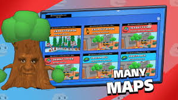

Brawl Stars est un jeu vidéo de stratégie et de tir en arènes (type MOBA et battle royale) en free-to-play, développé et édité par le studio finlandais Supercell. Il sort en version bêta le 15 juin 2017 sur iOS uniquement au Canada1, puis en juin 2018 sur Android. En décembre 2018, Supercell annonce la fin de la bêta et la sortie globale officielle du jeu sur iOS et Android.
En effet, depuis sa sorti Brawlstars connait un grand succès apprecié par les petits et les grands partout dans le monde.
Il existe différents modes de jeux tels que le Hors-jeu(3V3), Brawlbal(inspiré du football) ou bien encore le Survivant Solo ou Duo qui est l'equivalent du Battle Royale
Les joueurs peuvent choisir parmi une longue catégorie de personnages appelés Brawlers possédant chacun des capacités et pouvoirs uniques et propre à eux-mêmes de quoi permettre à chacun de trouver un personnage adéquat à leur styles de jeux
Chaque combats se déroulent sur des cartes chacune ayant sa propre disposition et ses obstacles forçant les joueurs à trouver, changer et adopter de nouvelles stratégies
EN QU'ELLE ANNEE EST SORTI BRAWLSTARS?
appuiyez sur le boutton pour voir la bonne réponse!
id="monTexte">2017
Edgar est un brawleur épique qui pouvait être débloqué gratuitement en tant que cadeau dans l'evenement Brawlidays 2020 sorti pendant la période de noël du 19 décembre au 7 janvier ou alors depuis Starr Road. En conséquance, tout les joueurs étant curieux et impatient d'essayer ce nouveau Brawler, tout les modes de jeux furent remplis de parties avec que des Edgars rendant impossible de jouer tout autre Brawlers Edgar étant un personnage extremement fort et facile à joueur.
Voici le liens officiel du jeux pour plus de questions et réponses
Le texte sur lequel cliquerPlus de précisions sur le nouveau Brawler Draco.
Nouveau Brawler DRACO